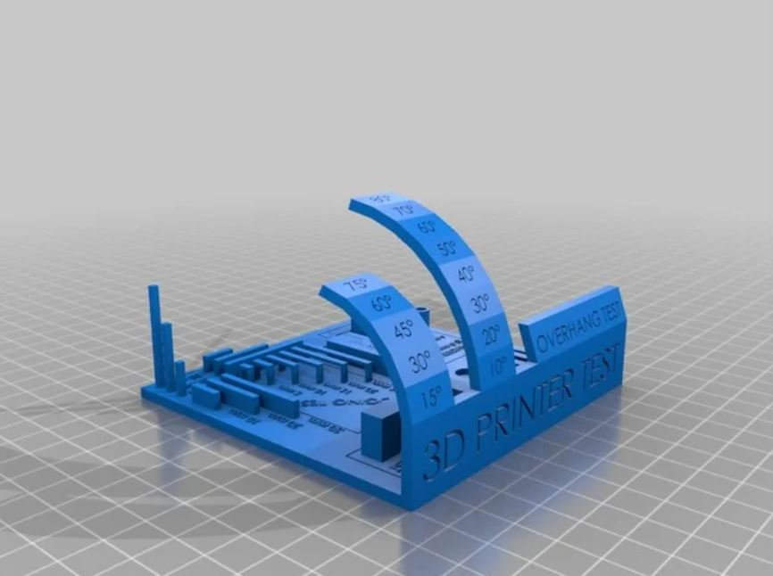
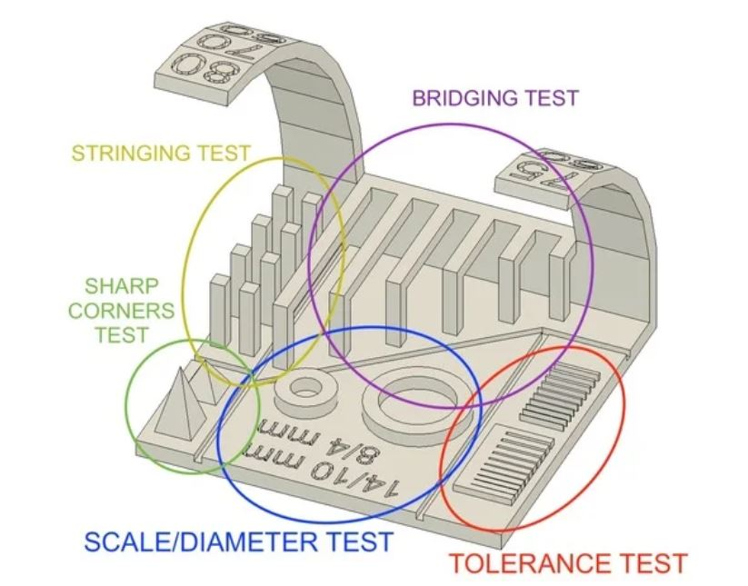
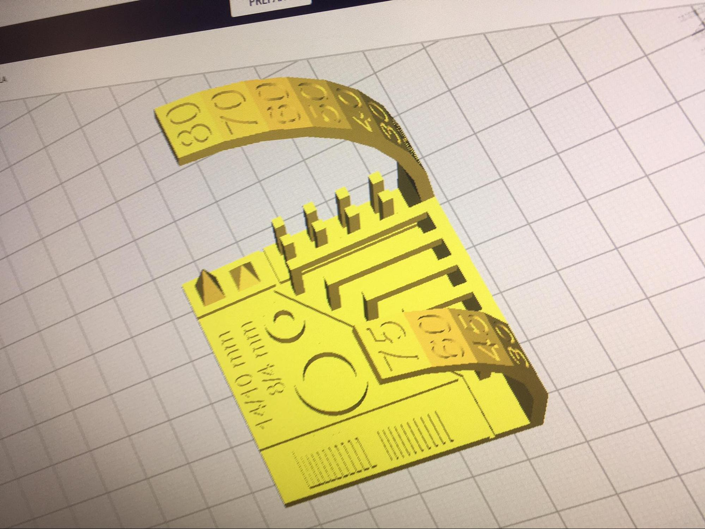
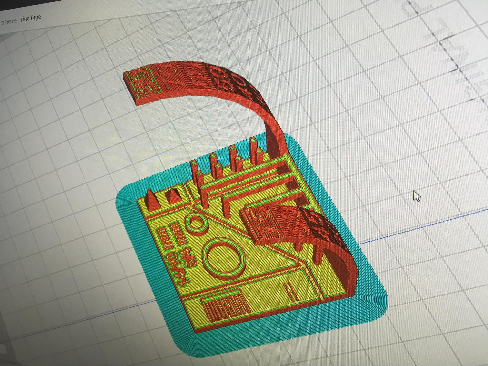
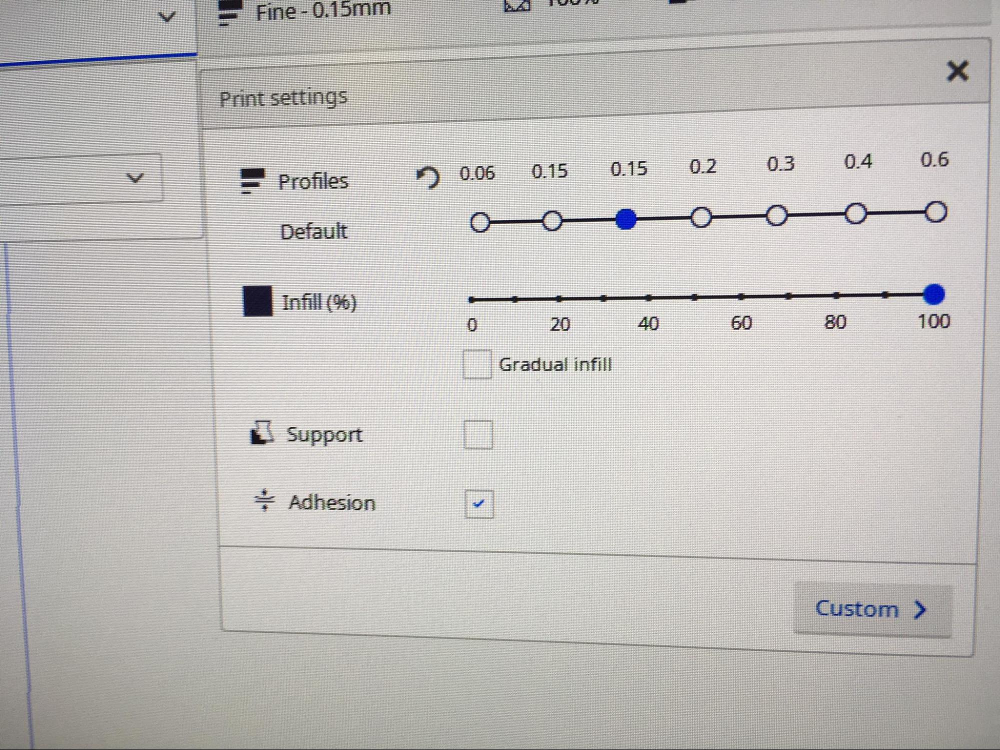

Hópmeðlimir:
Verkefnislýsing var svohljóðandi:
Veljið 3D prentara og ákvarðið hönnunar reglur / þvinganir. Skráið á sameiginlegu vefsvæði.
Til að ákvarða hönnunar reglur / þvinganir er oft gott að prenta hlut sem prófar getu prentarans. Þessi hlutur prófar þá , til dæmis, getu til að prenta:
Hafliði kennari mælti með þessum hlut af thingiverse.com en prentaður vegur hann 50g sem okkur fannst heldur mikið. Við sáum hins vegar í lýsingunni á hlutnum hlekk á þennan hlut sem vegur aðeins 14g og á víst að vera betri að öllu leyti og ákváðum því að nota hann í staðinn.
Hér eru myndir af hlutunum tveimur:
 Við ákváðum að notast við Prusa i3 Mk3 vegna þess að það var prentarinn sem var laus þegar kom að því að velja. Einnig var ákveðið að nota PLA plast þar sem sú plasttegund er umhverfisvænni en ABS plast. Auðvelt var að hlaða niður skjölunum sem þurfti til að prenta hlutinn og þá var hægt að setja þau inn á minnislykil og færa á tölvu í FabLab sem búin var Cura hugbúnaðinum.
Við náðum í .stl skrá fyrir hlutinn af linknum hér að ofan og færðum yfir í Cura sem er hugbúnaður sem notaður er til þess að skera þrívíddarhlutina niður svo prentarinn viti hvaða leið hann á að fara. Inni í Cura völdum við síðan hvaða prentara og hvaða plast við vorum að nota (í okkar tilfelli Prusa i3 mk3 og PLA) og fluttum síðan skrána sem Cura gaf yfir í prentarann með SD korti.
  Prentunin tók um það bil 2 tíma og 20 mínútur í framkvæmd. Niðurstöðurnar voru mis ásættanlegar: